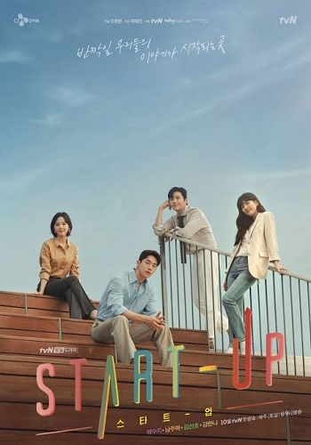
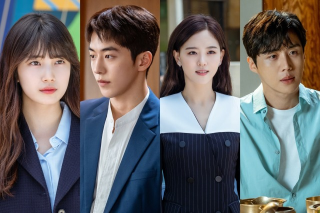

Review Drama Start Up, Lika Liku Romansa dan Persahabatan di Perusahaan Rintisan
Konten ini diproduksi oleh kumparan K-Pop
14 November 2020 11:41

Belakangan ini, Start Up jadi salah satu drama yang ramai diperbincangkan pecinta drama Korea. Soalnya, drama ini mengangkat kisah romansa dilatar belakangi perusahan start up, yang masih jarang diangkat drama-drama lainnya.
Belum lagi, drama ini dibintangi pemain ternama seperti Suzy sampai Nam Joo Hyuk. Enggak heran kalau
chemistry Suzy yang membintangi Vagabond, dan Nam Joo Hyuk yang populer lewat Weighlifting Fairy
Kim Bok Joo ditunggu-ditunggu. Begitu pun dengan aksi Kim Sun Ho yang pernah membintangi Welcome to Waikiki 2 dan Kang Ha Na yang dikenal lewat Moon Lovers: Scarlet Heart Ryeo.
Start Up mengisahkan Nam Joo Hyuk, Suzy, Kim Sun Ho, dan Kang Ha Na yang terlibat di gudang perusahaan start up ala Sillicon Valley yakni Sandbox, demi mencapai kesuksesan.
Daya tarik lain drama ini adalah konflik Seo Dal Mi (Suzy) yang mengira kalau pemilik perusahaan start up Samsan Tech yakni Nam Do San (Nam Joo Hyuk), adalah cinta pertama dan teman penanya.
Padahal, semua surat yang diterima Dal Mi atas nama Do San ditulis oleh manajer keuangan sekaligus mentor Sandbox, Han Ji Pyeong (Kim Sun Ho).Ini semua dilakukan Ji Pyeong untuk membalas kebaikan nenek Dal Mi yang dulu banyak membantunya.Dal Mi berusaha masuk ke Sandbox untuk membuktikan kepada kakaknya Won In Jae (Kang Ha Na), kalau memihak sang ayah usai orang tua mereka cerai itu enggak salah. Sementara, In Jae yang sudah sukses berkat ayah barunya justru masuk ke Sandbox, untuk membuktikan pada Dal Mi kalau dia bisa sukses tanpa koneksi.
Drama Start Up memang punya banyak daya tarik soal perusahan rintisan
Mulai dari pembentukan tim start up, jenis-jenis start up, pembuatan ide, promosi proposal, pembagian saham, modal, sampai perolehan keuntungan sebuah start up.Latar belakang kisah keluarga dan romansa Dal Mi pun diawali oleh start up. Jadi alur kisah Start Up terasa natural, nyambung, menarik, enggak bikin ilfeel karena terlalu dipaksakan, bahkan bisa bikin penonton terharu.
Salah satunya ide Nam Do San yang ingin membuat aplikasi untuk tuna netra, saat mengetahui nenek Dal Mi mulai kehilangan penglihatan. Di sisi lain, keputusan Dal Mi, Do San, dan para tokoh di drama ini sering membuat penonton berpikir ulang soal peluang, resiko, dan motivasi dalam meraih mimpi di hidup kita. Walau begitu, konflik romansa drama ini lah yang sukses membuat tiap episode Start Up ditunggu penggemar. Banyak juga lho, fans yang bikin tim untuk pasangan tercocok buat Dal Mi.

Ada yang mendukung Do San karena apa adanya, polos, tapi bisa ambisus demi Dal Mi. Sementara banyak yang lebih suka Ji Pyeong karena selalu menjaga Dal Mi diam-diam meski enggak mau mengakui perasaannya. Di sisi lain, aksi teman-teman Do San yang kocak dan ada-ada saja tuh, menghibur banget. Adegan mereka ini yang terkadang justru jadi momen ikonik.
Misalnya saat Do San dan Kim Yong San (Kim Do Wan) harus menggotong Lee Chul San (Yoo Su Bin) ke rumah sakit, gara-gara susu basi yang meledak. Sayangnya, Start Up masih masuk ke dalam streotip drama Korea yang terlalu fokus sama romansanya. Jadi penonton yang berharap drama ini punya konflik start up rumit seperti judulnya, siap-siap agak kecewa, nih.
Dilansir cinemaescapist, Start Up pun masih mengutamakan visual yang biasa mucul di drama Korea, sehingga kurang nyata dibanding lingkungan start up yang sebenarnya.
Kalau kamu tipe penonton yang paling minat sama cinta segitiga Seo Dal Mi, Nam Do San, dan Han Ji Pyeong, sih, jangan ragu buat nonton ya!
Drama ini masih tayang tiap Sabtu dan Minggu di tvN dan Netflix.